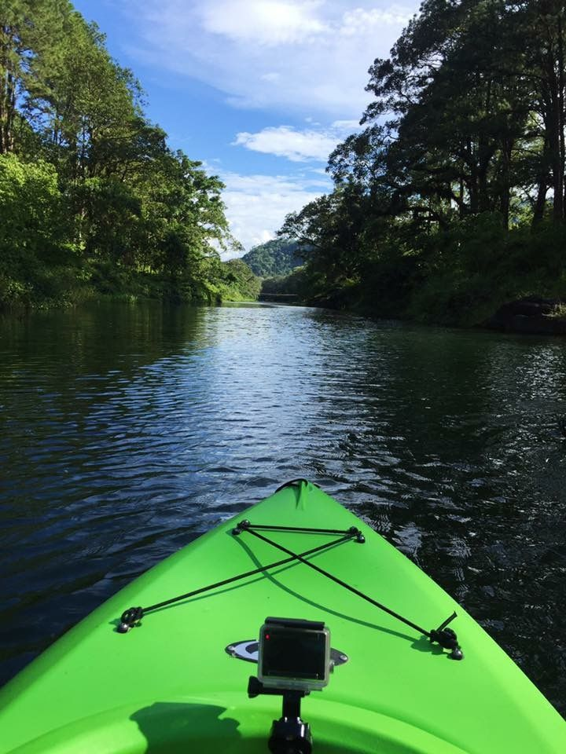

4-Day Itinerary

Honduras is a gem of Central America, boasting lush landscapes, vibrant culture, and pristine beaches. Here's a 4-day itinerary to experience the best of Honduras:
-
Day 1: Explore Tegucigalpa’s historic center, hike at La Tigra National Park, enjoy local Honduran cuisine at a traditional restaurant.

-
Day 2: Visit the Copán Ruins, a UNESCO World Heritage Site, and learn about ancient Mayan civilization. Stay in the charming town of Copán Ruinas.


-
Day 3: Head to Roatán Island, snorkel in the Mesoamerican Barrier Reef, and relax on West Bay Beach.


- Day 4: Kayak through mangroves in Utila, swim with whale sharks (seasonal), and savor a seafood feast by the ocean. 
Travel Tips
- Best time to visit: December to April (dry season)
- Currency: Honduran Lempira (HNL)
- Language: Spanish (basic English spoken in tourist areas)
- Must-try foods: Baleadas, Sopa de Caracol, fresh seafood
- Safety Tip: Stick to well-traveled areas and follow local advice for a safe trip.